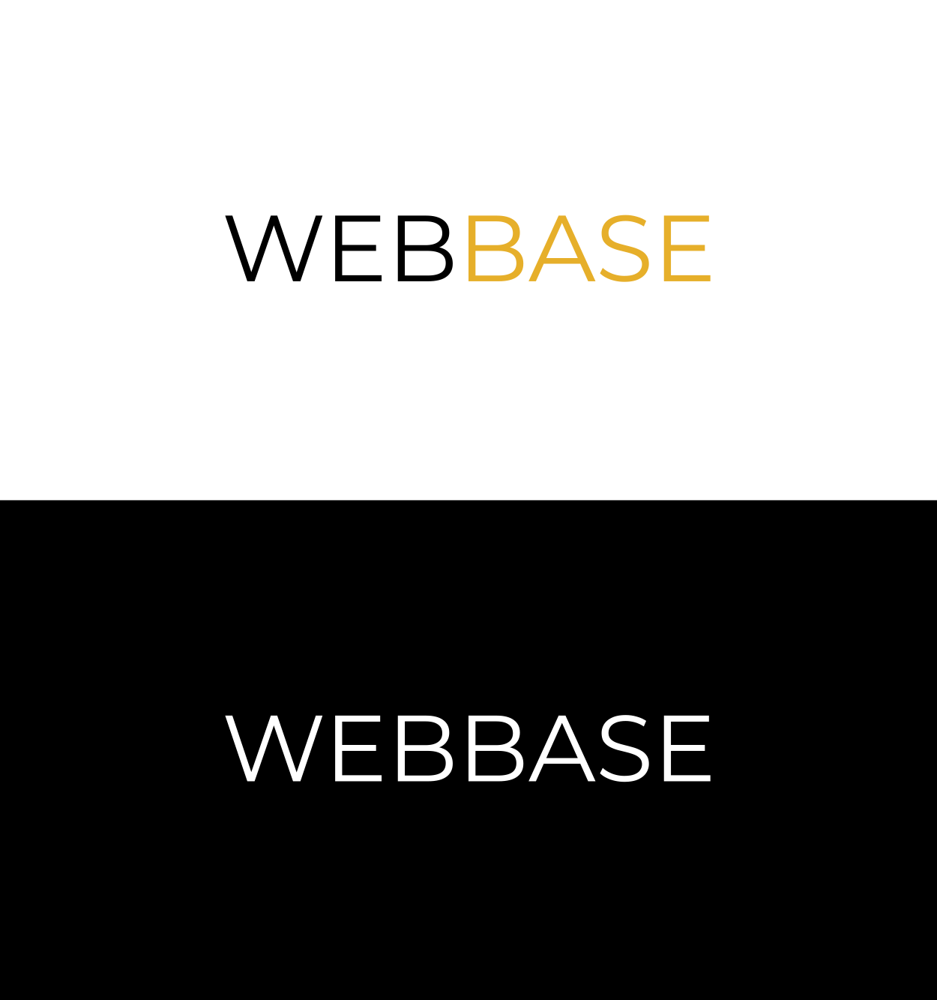
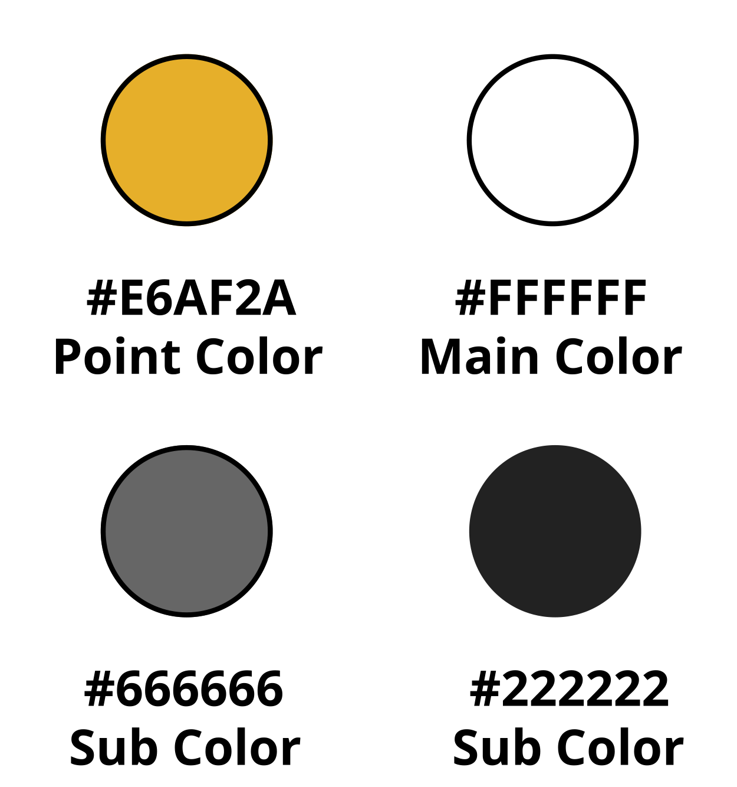
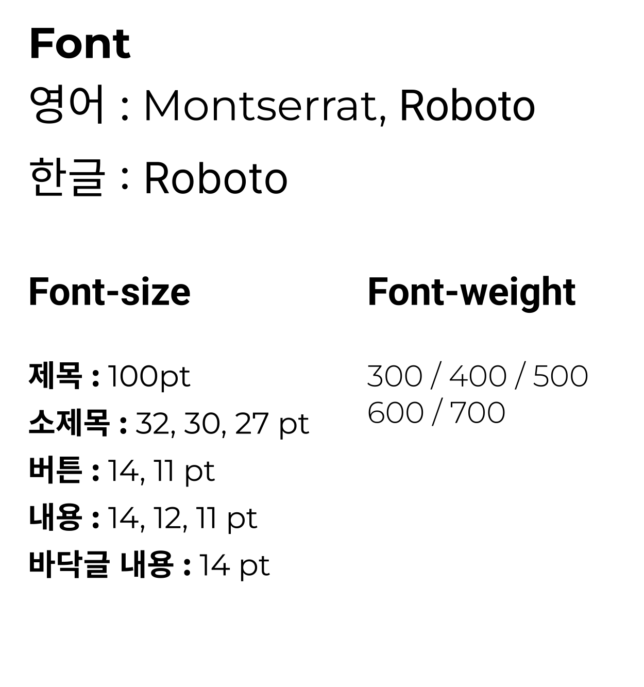

Style Guide  Logo 두꺼우면서 잘 보일 수 있는 UNPEOPLE Gothic UNI 폰트를 사용하였습니다. View more  Color 포인트 컬러 선정에서 남색과 초록색 중 고민하였습니다. 초록색이 식물 앱에 잘 어울려서 #007C12 색상을 최종 선택하였습니다. View more  Font 깔끔하고 많이 사용하는 Noto sans 폰트를 사용하였습니다. View more